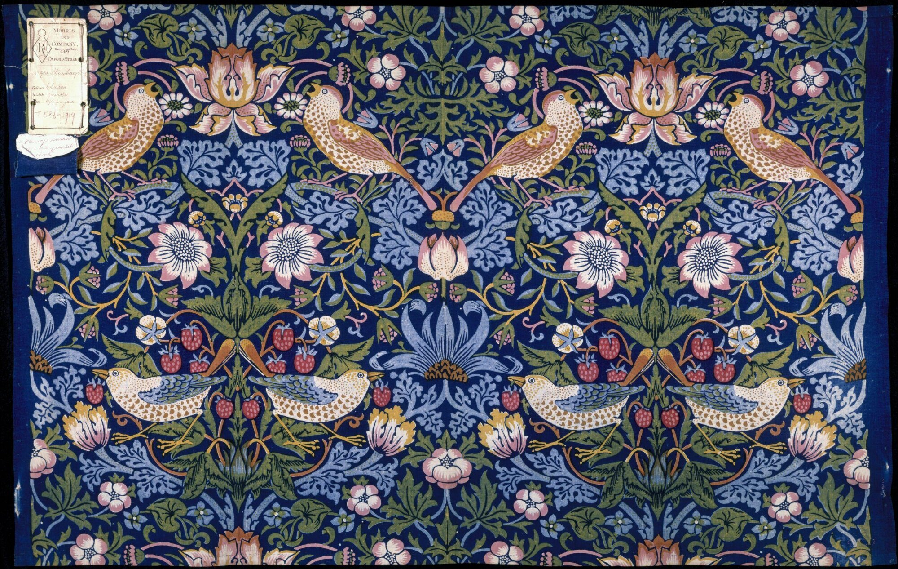

Probe

Strawberry Thief, William Morris, 1883
V&A · T.586-1919 · © Victoria and Albert Museum, London
Artificial intelligence in cultural heritage
Where might AI fit in museums— and where might it not?
Choose the situation assigned by the researcher. You will take on a specific role, give your first reaction from a short context, review a near-future AI proposal, then change it into a version that makes better sense to you.
About 16–20 minutes · No correct answer · Resume later
HOW IT WORKS
What will you do, step by step?
Each page has one task. Your answers are saved automatically on this device.
- 1
Enter a role and situation
Read who you are in the situation, the object or workplace context, and the museum problem under discussion.
- 2
Give your first reaction
Before seeing the full proposal, choose the answer closest to your current view and briefly explain why.
- 3
Review and change the proposal
Mark what can stay, what worries you and what should be removed, then write how you would change it.
- 4
Choose again
Say whether your view changed, then consider responsibility, maintenance, consequences and non-AI alternatives.
Saved progress
Continue an unfinished situation
01—04
Choose your research situation
If the researcher gave you a number, open only that situation. Each participant normally completes one main situation.